Read the wind
Clear skies, shifting cloud, rain and rough water shape the voyage.
A first-person pirate adventure · In development
Build a crew. Read the wind. Find your way across a living Caribbean archipelago.
The project
Deck Rats is an in-development first-person pirate adventure set across a Caribbean archipelago. Sail between islands, take the helm, and face a world shaped by wind, weather and dangers below the surface.
This portfolio leads with recent in-game development captures and environment studies, then separates visual concept art from gameplay. All images are labelled by source and status.
Clear skies, shifting cloud, rain and rough water shape the voyage.
Sailing ships, small craft and a changing horizon anchor exploration.
Move between tropical, volcanic, reef and snowbound island regions.
Stories, pirate archetypes and voyage systems grow from the tavern.
01 / RECENT IN-GAME CAPTURES
Three clean views from the 7 November 2026 development build. Cropped to remove temporary debug banners; the scenes remain unaltered.
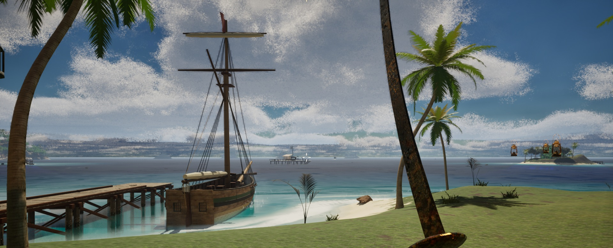
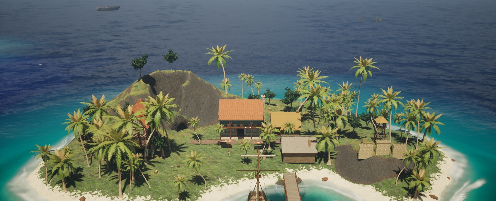
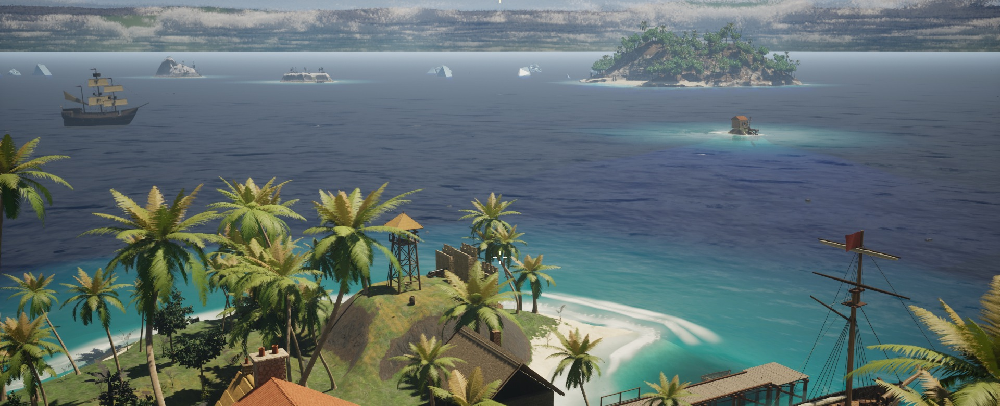
02 / SKY & SEA MATERIAL STUDIES
Recent in-engine studies of changing light, cloud cover, rain and sea state. These are environment captures, not finished gameplay scenes.
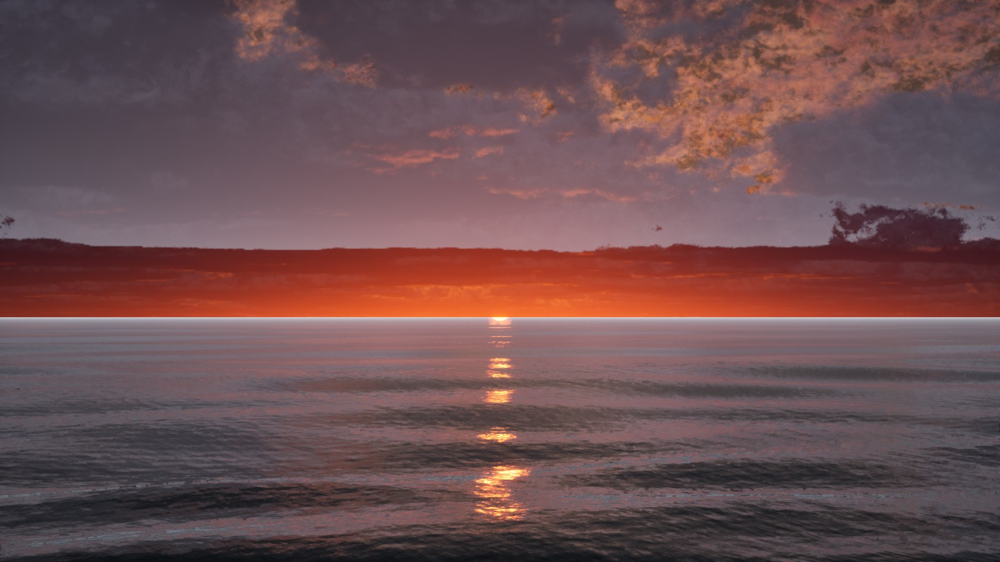
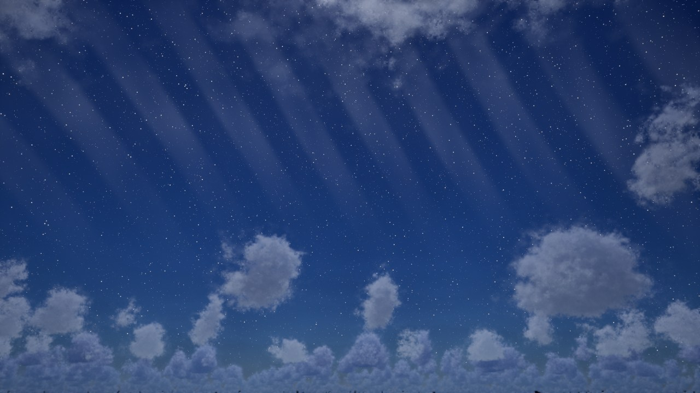
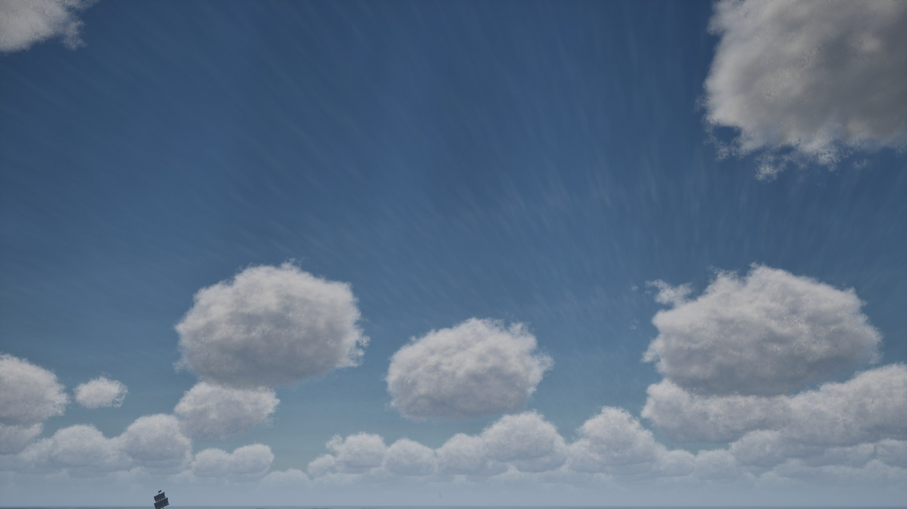
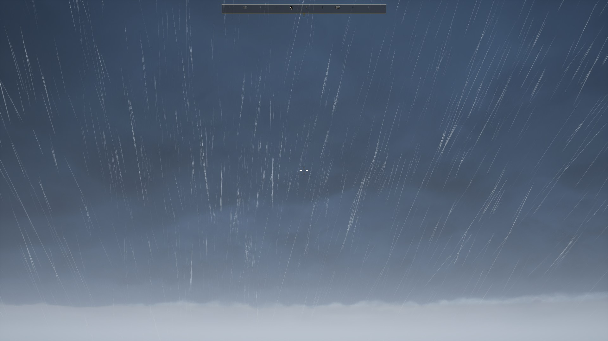
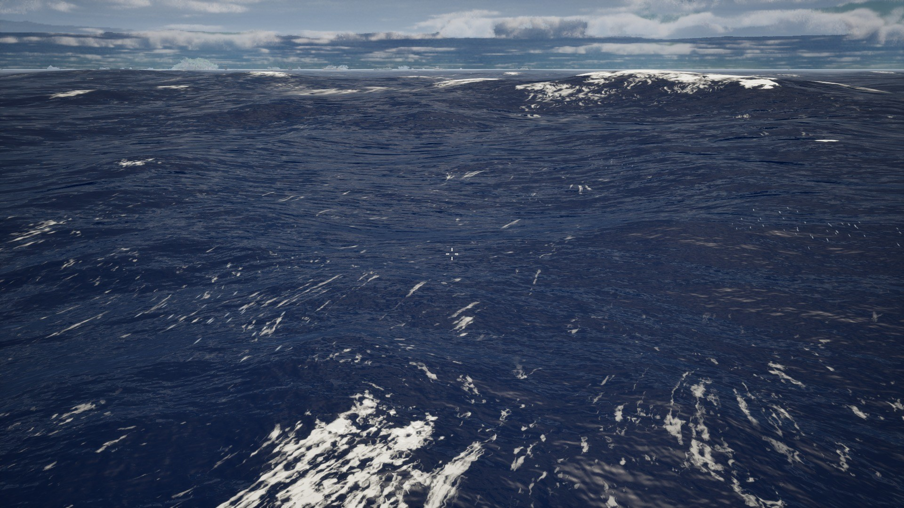
03 / CONCEPT ART
Concept artwork is kept separate from in-game images so the project’s current state is clear.
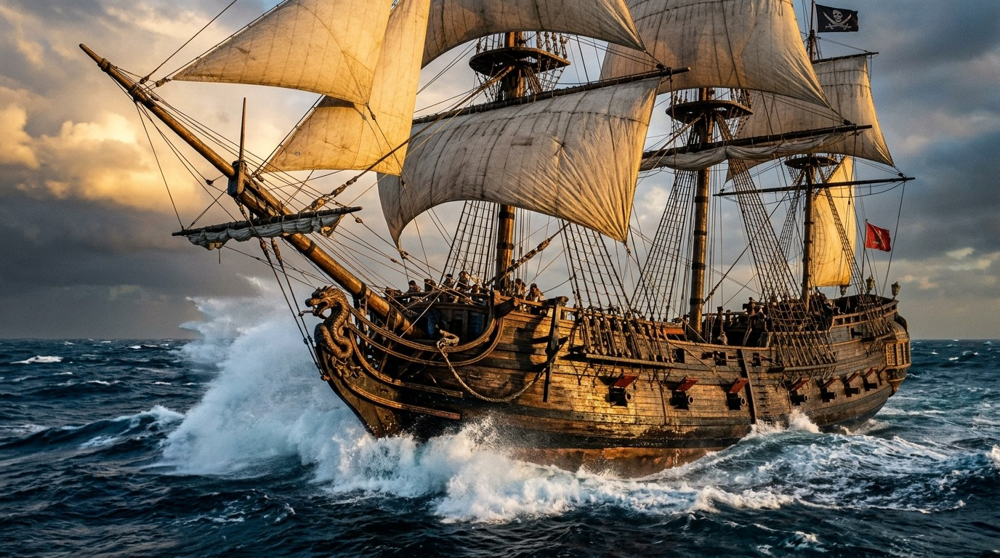
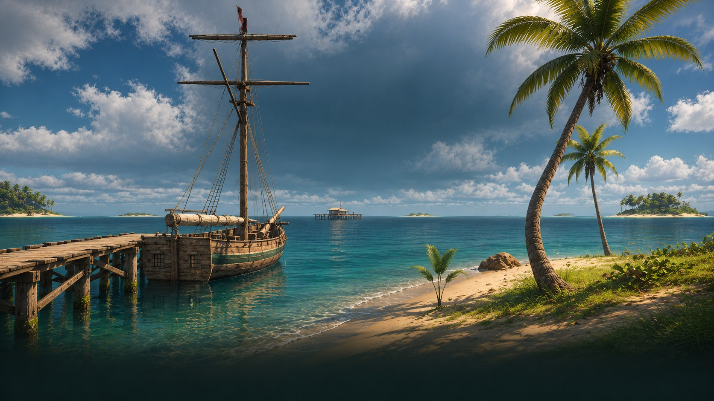
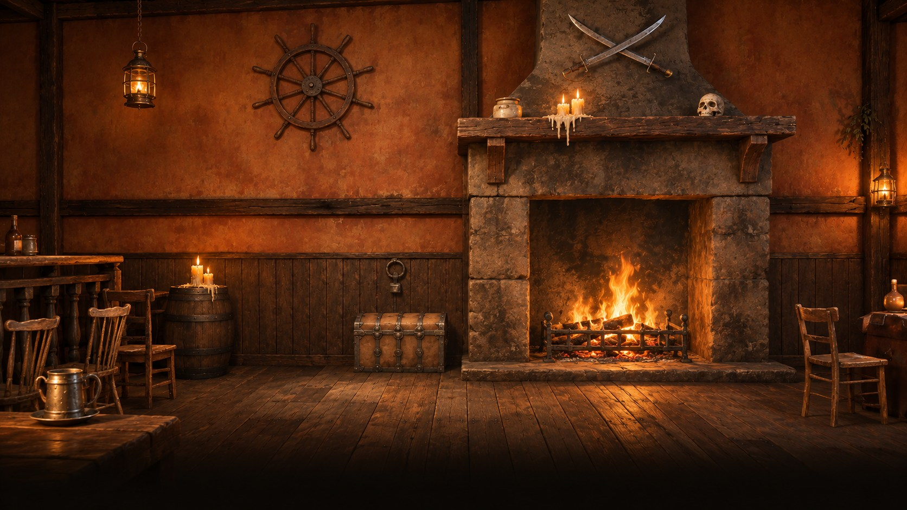
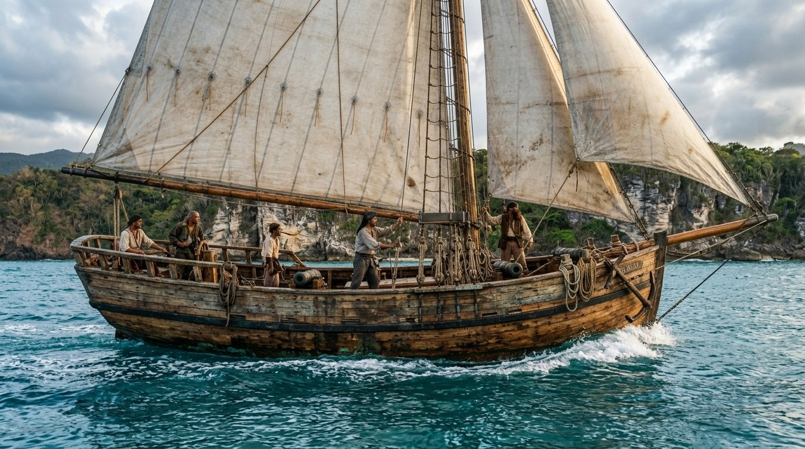
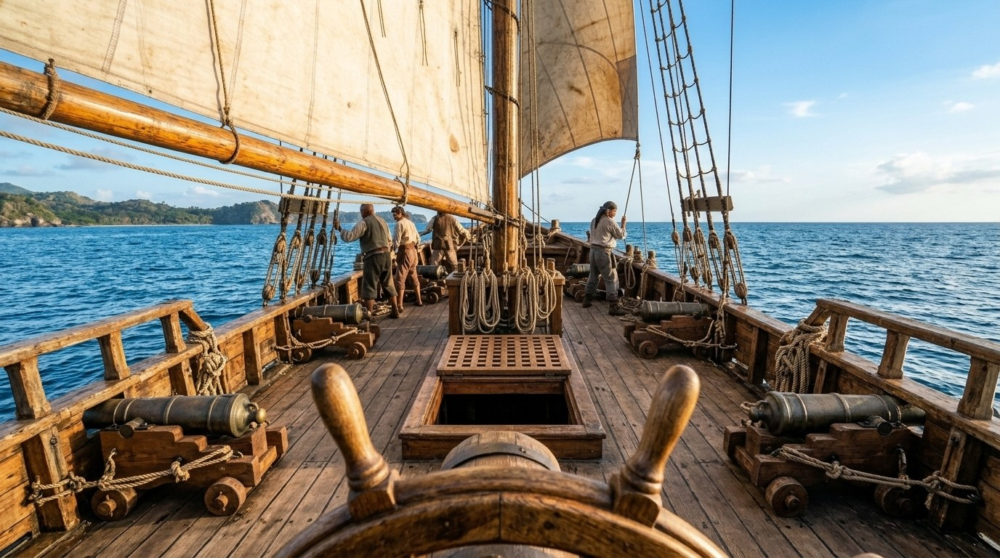
Campaign contact
For project, press or collaboration enquiries, contact the Deck Rats campaign.
3rcian.yt@gmail.com